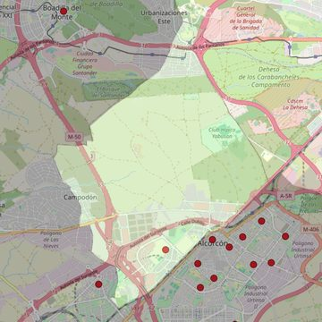

San Josemaría Escrivá de Balaguer
- Arciprestazgo
- Alcorcón
- Población
- Alcorcón
- Dirección postal
- c/ Copenhague, 2
- Código postal
- 28922
- Extensión
- 22,17 km² (2.217 ha)
- Teléfono
- 916 430 044
- Correo electrónico
- parroquiadesanjosemaria@gmail.com
- Información demográfica
- De la parroquia · De la población (Alcorcón) · Del arciprestazgo (Alcorcón)


Descargar mapaLímites según decreto
"Partiendo de la estación de cercanías de Alcorcón del ferrocarril Madrid-Móstoles (C-5), arrancan por el eje de las vías del ferrocarril (en dirección suroeste) hasta el límite del término municipal Alcorcón Leganes; siguen por el límite del término municipal Alcorcón Leganes (en dirección noroeste), por el límite del término municipal Alcorcón-Villaviciosa de Odón (en dirección noroeste y noreste), por el límite del término municipal de Alcorcón-Boadilla del Monte (en dirección noreste) , por el límite del término municipal de Alcorcón-Pozuelo de Alarcón (en dirección sureste y suroeste), por el límite del término municipal de Alcorcón-Madrid (en dirección sureste), por el eje de la autovía de Extremadura (A-5), por el eje de la avenida Móstoles (en dirección suroeste), por el eje de las vías del ferrocarril Madrid-Móstoles (C-5; en dirección suroeste) hasta la estación de cercanías de Alcorcón del ferrocarril Madrid-Móstoles (C-5), punto de partida". (Decreto de erección, 21-6-2005. B.O. de julio-agosto de 2005, pág. 791)
Desarrollos urbanísticos previstos
- Retamar de la Huerta: 3.500 viviendas · previsión a 2030-2045
Las cifras y sus fuentes están en la ficha de cada desarrollo, en la sección «Previsión de desarrollos urbanísticos».